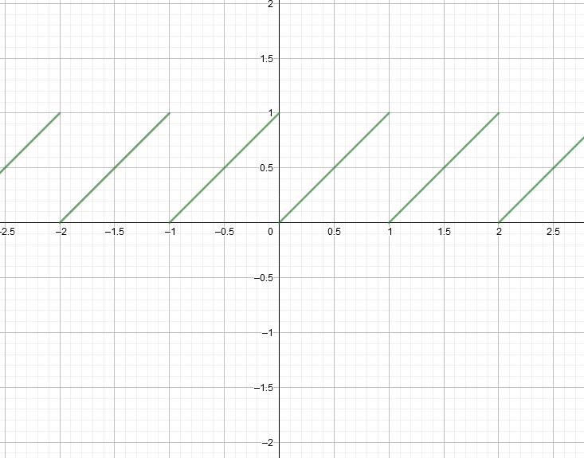
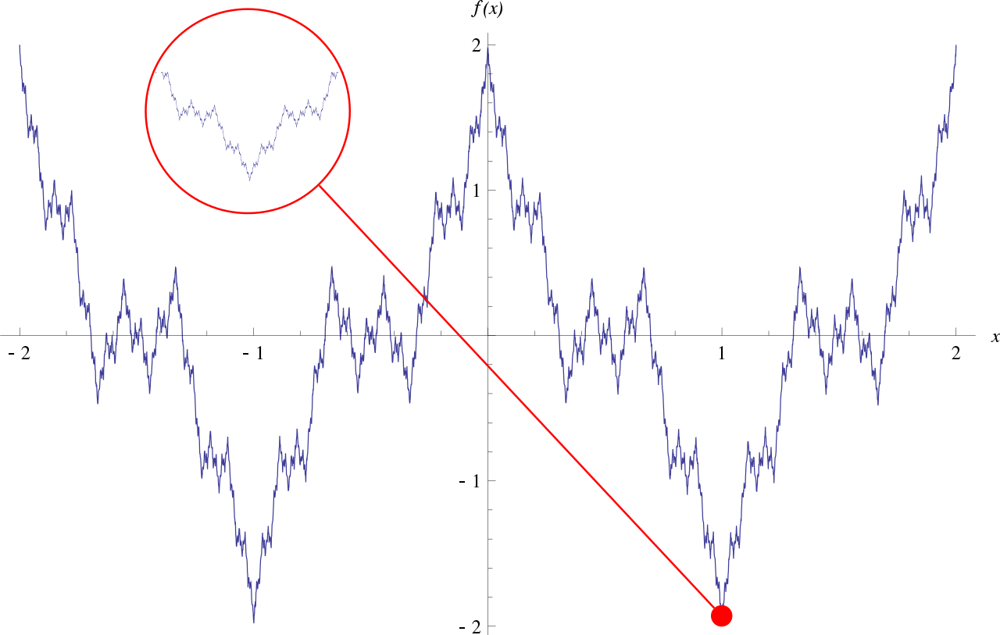
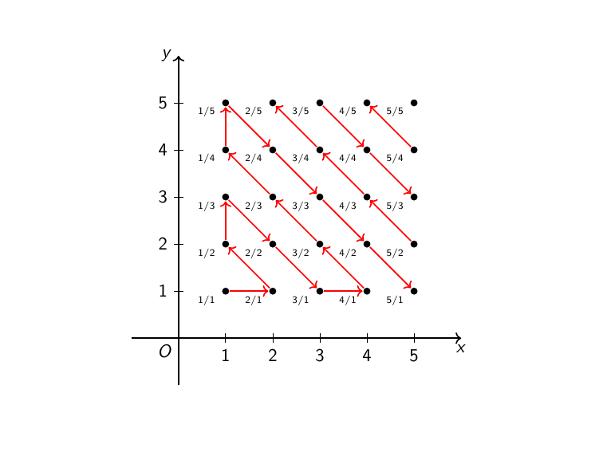

Πόσες είναι οι συνεχείς συναρτήσεις;#
Ο πίνακας Άντρες που σέρνουν μία βάρκα στις όχθες του Βόλγα του Ilya Repin.#
Στο λύκειο ασχολούμαστε κυρίως με συνεχείς συναρτήσεις - συνήθως, δε, και παραγωγίσιμες. Ακόμα και όσες από τις συναρτήσεις που βλέπουμε στα πλαίσια μίας τυπικής προετοιμασίας για τις πανελλήνιες δεν είναι συνεχείς, «το χάνουνε» σε λίγα σημεία, οπότε, θα έλεγε κανείς, είναι «σχεδόν» συνεχείς - αυτό το «σχεδόν» μην το πάρετε ελαφρά τη καρδία, είναι σημαντικό. Είναι, ωστόσο, έτσι τα πράγματα; Είναι «μπόλικες» οι συνεχείς συναρτήσεις και ασχολούμαστε μόνο με αυτές στο λύκειο ή όχι;
Brainstorming#
Η αλήθεια είναι ότι «με το μάτι» η απάντηση στα παραπάνω ερωτήματα ίσως και να φαίνεται απλή. Διότι, όλες οι βασικές συναρτήσεις που γνωρίζουμε είναι συνεχείς και, μάλιστα, άπειρες φορές παραγωγίσιμες, Πάρτε τα πολυώνυμα, τις τριγωνομετρικές, τις εκθετικές και τις λογαριθμικές, όλες τους είναι πολύ «καλές» συναρτήσεις. Και, ως γνωστόν, πράξεις μεταξύ συνεχών ή/και παραγωγίσιμων συναρτήσεων δίνουν και πάλι συνεχείς/παραγωγίσιμες συναρτήσεις, επομένως, ακόμα και πιο «στριφνές» συναρτήσεις όπως η παρακάτω:
είναι συνεχείς και παραγωγίσιμες στο πεδίο ορισμού τους.
Ως τώρα, όλα φαίνονται ονειρικά. Εντάξει, μπορούμε τα παραπάνω να τα χαλάσουμε αν βάλουμε μέσα στο παιχνίδι απόλυτες τιμές και ρίζες - σε ό,τι αφορά την παραγωγισιμότητα - αλλά, και πάλι, όλες αυτές οι συναρτήσεις είναι συνεχείς στο πεδίο ορισμού τους. Ε, και πόσες ασυνέχειες να βάλουμε, πλέον; Πέντε; Δέκα; Εκατό;
Η αλήθεια είναι ότι μπορούμε εύκολα, σχετικά, να σχεδιάσουμε μία συνάρτηση με γραφική παράσταση που να έχει άπειρες, στο πλήθος, ασυνέχειες, όπως αυτή που φαίνεται στο παρακάτω σχήμα:

Μία ωραία συνάρτηση με άπειρες ασυνέχειες - μπορείτε να βρείτε έναν τύπο για αυτήν την συνάρτηση;#
Αυτές οι ασυνέχειες, όπως μπορεί να παρατηρήσει κανείς, είναι αριθμήσιμες στο πλήθος τους, δηλαδή δεν είναι περισσότερες από τους φυσικούς αριθμούς - μία μικρή υπενθύμιση περί αριθμησιμότητας. Μπορούμε να σκεφτούμε επίσης και μία συνάρτηση που να έχει υπεραριθμήσιμες στο πλήθος ασυνέχειες όπως αυτήν εδώ:
η οποία αντιστοιχίζει κάθε ρητό στο 1 και κάθε άρρητο στο 0 - είναι, όπως λέμε, η χαρακτηριστική συνάρτηση των ρητών. Για την ακρίβεια, η παραπάνω είναι πολύ «κακή» συνάρτηση, υπό την έννοια ότι είναι ασυνεχής σε κάθε πραγματικό αριθμό! Δυστυχώς, δεν μπορούμε να τη σχεδιάσουμε με ακρίβεια, αλλά μπορείτε να τη φανταστείτε σαν δύο οριζόντιες «γραμμές» γεμάτες τρύπες. Για την ακρίβεια, την \(y=1\) και την \(y=0\) όπου η πρώτη, που αντιστοιχεί στα «ρητά» σημεία της γραφικής της παράστασης και είναι πιο «αραιή» ενώ η δεύτερη αντιστοιχεί στα «άρρητα» σημεία της γραφικής παράστασης και είναι πιο «πυκνή» και συμπληρωματική της πρώτης. Η πυκνότητα των δύο γραμμών έχει να κάνει με ζητήματα που δε μας αφορούν σε αυτήν την ανάρτηση αλλά σίγουρα θα μας απασχολήσουν σε κάποια μελλοντική ανάρτηση.
Εξερευνώντας την παθολογία των συνεχών και ασυνεχών συναρτήσεων, μπορούμε να βρούμε και συνεχείς συναρτήσεις αρκετά «αποκρουστικές», όπως τη συνάρτηση του Weierstrass που βλέπετε παρακάτω:

Η γλυκούλα που βλέπετε παραπάνω είναι παντού συνεχής και πουθενά παραγωγίσιμη - πηγή εικόνας: Wikipedia.#
η οποία είναι μεν συνεχής σε όλο το \(\mathbb{R}\) - και περιοδική, τρομάρα της - αλλά δεν είναι πουθενά παραγωγίσιμη.
Βλέπουμε, λοιπόν, ότι και οι δύο κατηγορίες - αυτή των συνεχών και αυτή των ασυνεχών συναρτήσεων - έχουν να επιδείξουν ιδιαίτερη ποικιλία σε σχέση με τα μέλη τους, επομένως, ίσως να μην είναι και τόσο εύκολο να βρούμε τελικά πόσες είναι οι συνεχείς συναρτήσεις και αν είναι περισσότερες ή λιγότερες από τις ασυνεχείς.
Θέτοντας το πρόβλημα πιο αυστηρά#
Για να διερευνήσουμε διεξοδικά τα παραπάνω, χρειάζεται να απαντήσουμε, αρχικά, σε δύο κρίσιμα ερωτήματα:
Πόσες είναι όλες οι συναρτήσεις \(f:\mathbb{R}\to\mathbb{R}\) ;
Πόσες είναι όλες οι συνεχείς συναρτήσεις \(f:\mathbb{R}\to\mathbb{R}\) ;
Περιοριζόμαστε σκόπιμα σε συναρτήσεις ορισμένες για όλους τους πραγματικούς αριθμούς μιας και όσα θα βρούμε - αν βρούμε - γενικεύονται εύκολα για συναρτήσεις με αυθαίρετο πεδίο ορισμού - με τη δέουσα, πάντα, προσοχή. Από εδώ κι εμπρός θα αναφερόμαστε σε αυτές τις συναρτήσεις ως πραγματικές και πραγματικές συνεχείς συναρτήσεις, αντίστοιχα.
Ας πάρουμε τα πράγματα με τη σειρά, λοιπόν. Πόσες είναι οι συναρτήσεις που είναι ορισμένες στο \(\mathbb{R}\) ; Άπειρες, θα πει κανείς. Ε, σιγά την απάντηση. Άπειροι είναι και οι φυσικοί αριθμοί, και οι ρητοί, και οι πραγματικοί, ωστόσο, όπως έχουμε ξαναδεί, οι τελευταίοι είναι «αισθητά» περισσότεροι από τους ρητούς και τους φυσικούς. Επομένως, πρέπει να συγκρίνουμε το πλήθος των πραγματικών συναρτήσεων με διάφορους άλλους άπειρους πληθάριθμους και να δούμε τι είδους συμπεράσματα μπορούμε να βγάλουμε από εκεί.
Ας παρατηρήσουμε πρώτα ότι μπορούμε για κάθε πραγματικό αριθμό \(c\in\mathbb{R}\) να ορίσουμε την αντίστοιχη σταθερή συνάρτηση \(f_c(x)=c\) , συνεπώς οι πραγματικές συναρτήσεις είναι τουλάχιστον τόσες όσοι οι πραγματικοί αριθμοί. Επειδή οι \(f_c\) είναι συνεχείς, το ίδιο συμβαίνει και για τις συνεχείς συναρτήσεις - είναι τουλάχιστον τόσες όσοι και οι πραγματικοί αριθμοί. Ας συμβολίσουμε, για ευκολία, το πλήθος των πραγματικών αριθμών με \(\|\mathbb{R}|\) , οπότε τα παραπάνω μας λένε ότι υπάρχουν τουλάχιστον \(\|\mathbb{R}|\) στο πλήθος πραγματικές (και συνεχείς) συναρτήσεις.
Τώρα θα έλεγε κανείς ότι, αφού οι σταθερές συναρτήσεις είναι τόσες όσοι και οι πραγματικοί αριθμοί, προφανώς και οι πραγματικές συναρτήσεις στο σύνολό τους - ακόμα και μόνο συνεχείς να είναι - θα είναι πολύ περισσότερες από τους πραγματικούς αριθμούς. Ωστόσο, δεν αρκεί μόνο η διαίσθησή μας για να ισχυριστούμε ότι κάτι είναι μαθηματικά ορθό. Ας περάσουμε, λοιπόν, σε μία διερεύνηση του κατά πόσον μπορούμε να επιβεβαιώσουμε ή όχι τη διαίσθησή μας.
Πραγματικές συναρτήσεις vs Πραγματικοί αριθμοί#
Ας συμβολίσουμε το σύνολο όλων των πραγματικών συναρτήσεων με \(\mathbb{R}^{\mathbb{R}}\) - αυτός είναι ένας αρκετά συνηθισμένος συμβολισμός, είναι η αλήθεια. Το κάτω \(\mathbb{R}\) στο παραπάνω σύμβολο αναφέρεται στο πεδίο τιμών των συναρτήσεων ενώ το πάνω στο πεδίο ορισμού. Με αυτόν τον συμβολισμό, έχουμε ήδη δείξει παραπάνω ότι \(\|\mathbb{R}|\leq|\mathbb{R}^\mathbb{R}|\) , μας μένει, επομένως, να εξετάσουμε αν ισχύει ή όχι η ισότητα.
Όπως ήδη θα ψυλλιάζεστε, μάλλον δεν ισχύει το \(=\) , καθώς όλες οι συναρτήσεις φαίνεται να είναι πολύ - μα, πάρα πολύ - περισσότερες από τους πραγματικούς αριθμούς. Για να το αποδείξουμε, θα ανακυκλώσουμε εδώ ένα επιχείρημα που έχουμε δει και σε άλλη ανάρτηση, ένα διαγώνιο επιχείρημα του Cantor, όπως λέμε. Για ζέσταμα, ας θυμηθούμε πρώτα πώς με ένα τέτοιο επιχείρημα μπορούμε να αποδείξουμε ότι \(\|\mathbb{N}|<|\mathbb{N}^\mathbb{N}|.\) Υποθέτουμε, αρχικά, προς άτοπο, ότι \(\|\mathbb{N}|=|\mathbb{N}^\mathbb{N}|\) . Αυτό πρακτικά σημαίνει ότι μπορούμε όλες τις ακολουθίες φυσικών αριθμών - δηλαδή όλα τα στοιχεία του \(\|\mathbb{N}^\mathbb{N}|\) - να τις αριθμήσουμε, ήτοι, να τις γράψουμε σε μία «λίστα» της μορφής \(\{x_1,x_2,\ldots\}\) , δηλαδή, σε μία ακολουθία. Αφού το κάνουμε αυτό, μπορούμε να τις γράψουμε τη μία κάτω από την άλλη στον παρακάτω άπειρο «πίνακα», όπου με \(x_1(3)\) συμβολίζουμε το τρίτο (3) στοιχείο της πρώτης (1) ακολουθίας της λίστας μας:
Τώρα, θεωρούμε την ακολουθία φυσικών αριθμών \(y\) η οποία κατασκευάζεται ως εξής:
\(y(1)=x_1(1)+1\neq x_1(1)\)
\(y(2)=x_2(2)+1\neq x_2(2)\)
\(y(3)=x_3(3)+1\neq x_3(3)\)
…
Επί της ουσίας, πάμε σε κάθε στοιχείο της διαγωνίου του παραπάνω πίνακα και το αλλάζουμε, επιλέγοντας έναν - οποιονδήποτε - άλλο φυσικό αριθμό. Σαφώς, \(y\in\mathbb{N}^\mathbb{N}\) επομένως, από την υπόθεσή μας, θα πρέπει \(y=x_k\) για κάποιον δείκτη \(k\in\mathbb{N}\) . Ωστόσο, \(y(k)\neq x_k(k)\) συνεπώς \(y\neq x_k\) , άτοπο, άρα \(\|\mathbb{N}|<|\mathbb{N}^\mathbb{N}|\) .
Το παραπάνω δεν μπορεί να δουλέψει άμεσα στην περίπτωσή μας, γιατί εκμεταλλευτήκαμε την αριθμησιμότητα των φυσικών αριθμών - στο σημείο που είπαμε ότι μπορούμε να γράψουμε όλες τις ακολουθίες φυσικών αριθμών σε μία λίστα. Ωστόσο, αυτό μπορούμε εύκολα να το παρακάμψουμε, ως εξής. Αρχικά, ας υποθέσουμε όπως και παραπάνω, προς άτοπο, ότι \(\|\mathbb{R}|=|\mathbb{R}^\mathbb{R}|\) . Αυτό σημαίνει ότι μπορούμε κάθε πραγματικό αριθμό να τον αντιστοιχίσουμε αμφιμονοσήμαντα σε μία πραγματική συνάρτηση. Δηλαδή, μπορούμε να γράψουμε το σύνολο \(\mathbb{R}^\mathbb{R}\) στην εξής μορφή:
με κάθε \(f_r\) να είναι διαφορετική από τις υπόλοιπες. Αρχικά, μία μικρή σημείωση-απολογία για τον συμβολισμό. Μην μπερδεύετε τις \(f_r\) με τις σταθερές συναρτήσεις \(f_c\) που ορίσαμε παραπάνω. Απλώς χρησιμοποιήσαμε τον ίδιο συμβολισμό για λόγους συντομίας, ωστόσο, σκεφτείτε ότι τις \(f_c\) τις διαγράψαμε από τη «RAM» μας - σαν να μην είχαμε μιλήσει ποτέ για αυτές. Επί της ουσίας, οι \(f_r\) είναι όλες οι πραγματικές συναρτήσεις που υπάρχουν και, με βάση την υπόθεσή μας, μπορούμε να τις ξεχωρίσουμε τη μία από την άλλη, κοιτώντας τον δείκτη τους, που είναι ένας πραγματικός αριθμός. Κατά κάποιον τρόπο, έχουμε γράψει όλες τις πραγματικές συναρτήσεις σε μία «λίστα» η οποία, ωστόσο, δεν έχει ως δείκτες φυσικούς αριθμούς - δεν είναι αριθμήσιμη - αλλά πραγματικούς αριθμούς.
Τώρα, προηγουμένως μπορούσαμε να παραθέσουμε τις ακολουθίες \(x_i\) τη μία κάτω από την άλλη, κάτι που ήταν εύκολο, μιας και στους φυσικούς αριθμούς έχουμε μία σαφή έννοια «τάξης»: υπάρχει ο πρώτος φυσικός αριθμός, ο δεύτερος (ο διάδοχος του πρώτου), ο τρίτος (ο διάδοχος του δεύτερου) κ.ο.κ.. Στους πραγματικούς αριθμούς μία τέτοια ιδιότητα δε φαίνεται καθαρά αν υπάρχει ή όχι στον ορίζοντα. Ωστόσο, μπορούμε να εργαστούμε και χωρίς αυτήν την υπόθεση, σχεδόν όπως παραπάνω και να θεωρήσουμε τη συνάρτηση \(g:\mathbb{R}\to\mathbb{R}\) η οποία ορίζεται ως:
Σαφώς, το 2020 στον ορισμό δεν παίζει κανέναν ρόλο - κάθε μη μηδενικός πραγματικός αριθμός μας κάνει. Παρατηρούμε τώρα ότι, αφού \(g\in\mathbb{R}^\mathbb{R}\) , έπεται ότι υπάρχει κάποιο \(r\in\mathbb{R}\) τέτοιο ώστε \(g=f_r\) . Ωστόσο, \(g(r)\neq f_r(r)\) άρα \(g\neq f_r\) για όποιο \(r\in\mathbb{R}\) κι αν επιλέξουμε, άτοπο, συνεπώς \(\|\mathbb{R}|<|\mathbb{R}^\mathbb{R}|\) , όπως φανταζόμαστε.
Επί της ουσίας, δε χρειάστηκε να κάνουμε κάποια τρελή παρέκκλιση από το αρχικό μας επιχείρημα για τους φυσικούς αριθμούς, παρά να παρατηρήσουμε ότι η αριθμησιμότητα δε μας ήταν απαραίτητη ως ιδιότητα. Είναι χρήσιμο να παρατηρήσουμε εδώ ότι αν μας δινόταν ένα οποιοδήποτε σύνολο \(A\) με τουλάχιστον δύο στοιχεία στη θέση του \(\mathbb{R}\) και πάλι θα μπορούσαμε με ακριβώς τον ίδιο τρόπο να δείξουμε ότι το σύνολο όλων των συναρτήσεων \(f:A\to A\) , που το συμβολίζουμε με \(A^A\) , έχει πληθάριθμο γνήσια μεγαλύτερο του \(A\) , δηλαδή \(\|A|<|A^A|\) . Αν επιλέξουμε ως \(A=\mathbb{N}\) τότε εύκολα μπορούμε να δούμε ότι μπορούμε να κατασκευάσουμε σύνολα με άπειρους πληθάριθμους που να είναι όλοι τους διαφορετικοί. Άρα, στην fancy ερώτηση «Είναι ένα το άπειρο;» η απάντηση είναι, εμφατικά, «όχι» καθώς άπειροι είναι οι φυσικοί αριθμοί αλλά, ακόμα πιο άπειρα είναι τα στοιχεία του συνόλου \(\mathbb{N}^\mathbb{N}\) - σε λίγο πιο χαλαρό επίπεδο τα παραπάνω, προφανώς.
Συνεχείς συναρτήσεις vs Πραγματικοί αριθμοί#
Ωραία, επιβεβαιώσαμε τη διαίσθησή μας σχετικά αναίμακτα και με bonus ένα ωραίο συμπέρασμα για τους άπειρους πληθάριθμους στην περίπτωση των πραγματικών συναρτήσεων. Ωστόσο, τι γίνεται με τις συνεχείς πραγματικές συναρτήσεις; Εδώ, όπως σχετικά εύκολα μπορείτε να δείτε, το ίδιο τέχνασμα δε θα δουλέψει. Πράγματι, ενώ μπορούμε και πάλι να υποθέσουμε ότι μπορούμε να γράψουμε σαν μία «λίστα» με πραγματικούς δείκτες όλες τις συνεχείς συναρτήσεις, η «διαγώνια» συνάρτηση \(g\) που κατασκευάσαμε παραπάνω δε μας εγγυάται κανείς ότι είναι συνεχής - μην πέσετε στην παγίδα να πείτε ότι είναι συνεχής ως πράξεις συνεχών συναρτήσεων!
Επομένως, πρέπει να βρούμε άλλον τρόπο να διερευνήσουμε την ισχύ ή όχι της διαισθητικής μας εικόνας ότι οι συνεχείς συναρτήσεις είναι κι αυτές «πολλές». Αρχικά, ας θυμηθούμε/δούμε τον ορισμό της συνέχειας - όχι τον λυκειακό, σαφώς:
Μία συνάρτηση \(f ` λέγεται συνεχής σε ένα :math:`x_0 ` του πεδίου ορισμού της αν για κάθε :math:\)varepsilon>0 ` υπάρχει \(\delta>0 ` τέτοιος ώστε για κάθε :math:`x ` του πεδίου ορισμού της να ισχύει: :math:\)|x-x_0|<deltaRightarrow|f(x)-f(x_0)|<varepsilon ` .
Μία βολική αναδιατύπωση του παραπάνω ορισμού με όρους ακολουθιών που θα μας φανεί ιδιαίτερα χρήσιμη είναι η ακόλουθη - αποκαλείται αρχή της μεταφοράς:
Μία συνάρτηση :math:`f ` είναι συνεχής σε ένα :math:`x_0 ` του πεδίου ορισμού της αν για κάθε ακολουθία :math:`x_n ` στοιχείων του πεδίου ορισμού της τέτοια ώστε :math:`x_nto x_0 ` ισχύει και :math:`f(x_n)to f(x_0) ` .
Δε θα αποδείξουμε ότι τα παραπάνω είναι ισοδύναμα, ωστόσο, δεν είναι και τόσο δύσκολο μιας και τα δύο εκφράζουν σε άλλες γλώσσες την ίδια ιδέα: όσο το \(x\) «πλησιάζει» το \(x_0\) τόσο το \(f(x)\) «πλησιάζει» το \(f(x_0)\) .
Με βάση το παραπάνω, θα αποδείξουμε το εξής ιδιαίτερα ενδιαφέρον για τις πραγματικές συνεχείς συναρτήσεις:
Μία συνεχής συνάρτηση :math:`f:mathbb{R}tomathbb{R} ` για την οποία ισχύει ότι :math:`f(x)=0 ` για κάθε :math:`xinmathbb{Q} ` είναι ταυτοτικά μηδενική, δηλαδή :math:`f(x)=0 ` για κάθε :math:`xinmathbb{R} ` .
Η απόδειξη του παραπάνω είναι σχετικά απλή. Αν \(x\in\mathbb{R}\) είναι ένας πραγματικός αριθμός, τότε, όπως γνωρίζουμε, υπάρχει μία ακολουθία ρητών αριθμών, έστω \(q_n\) τέτοια ώστε \(q_n\to x\) . Από την αρχή της μεταφοράς παίρνουμε ότι \(f(q_n)\to f(x)\) . Ωστόσο, επειδή \(q_n\in\mathbb{Q}\) έπεται ότι \(f(q_n)=0\) για κάθε \(n\in\mathbb{N}\) επομένως \(f(q_n)\to0\) . Από τη μοναδικότητα τώρα του ορίου μίας ακολουθίας έπεται ότι \(f(x)=0\) , άρα πράγματι η \(f\) είναι ταυτοτικά μηδενική.
Δεδομένου τώρα ότι η διαφορά δύο συνεχών συναρτήσεων είναι επίσης συνεχής, έχουμε άμεσα και ότι αν \(f(x)=g(x)\) για κάθε \(x\in\mathbb{Q}\) για δύο συνεχείς πραγματικές συναρτήσεις \(f,g\) τότε \(f=g\) (σε όλο το \(\mathbb{R}\) ).
Τα παραπάνω εκφράζουν μία ιδιαιτέρως ενδιαφέρουσα ιδιότητα των συνεχών πραγματικών συναρτήσεων. Αν μας απασχολεί να εξετάσουμε αν δύο τέτοιες συναρτήσεις είναι ίσες, δε χρειάζεται να εξετάσουμε κάθε τιμή στο πεδίο ορισμού τους, αλλά αρκεί να εξετάσουμε μόνο τις τιμές που παίρνουν στους ρητούς αριθμούς και η συνέχεια θα κάνει τα υπόλοιπα. Έτσι, οι συνεχείς συναρτήσεις φαίνονται να είναι αρκετά «λίγες» σε σχέση με τις πραγματικές συναρτήσεις στο σύνολό τους, υπό την έννοια ότι, σε αντίθεση με τις συνεχείς, για δύο πραγματικές συναρτήσεις χρειάζεται να εξετάσουμε κάθε τιμή τους - σε κάθε πραγματικό αριθμό - για να αποφανθούμε αν είναι ίσες ή όχι.
Τώρα κάπως κλονίζεται λίγο η διαίσθησή μας. Είναι τελικά τόσες πολλές οι πραγματικές συναρτήσεις ή μήπως είναι, κόντρα στις αρχικές μας προσδοκίες, ενοχλητικά λίγες; Ήρθε η ώρα να πιάσουμε χαρτί και μολύβι. Ας συμβολίσουμε με \(C_\mathbb{R}\) το σύνολο όλων των συνεχών πραγματικών συναρτήσεων. Έχουμε δει αρκετά παραπάνω ότι \(\|\mathbb{R}|\leq|C_\mathbb{R}|\) . Επίσης, όπως είπαμε, κάθε συνεχής συνάρτηση καθορίζεται κατά μοναδικό τρόπο μόνο από τις τιμές της στους ρητούς αριθμούς. Με άλλα λόγια, δε χρειάζεται να γνωρίζουμε κάθε τιμή μίας συνεχούς συνάρτησης \(f\) για να γνωρίζουμε ποια είναι παρά μόνο τις τιμές του συνόλου:
Κι εδώ έρχεται μία κομβική παρατήρηση: το σύνολο \(f(\mathbb{Q})\) είναι αριθμήσιμο - αφού οι ρητοί είναι αριθμήσιμοι. Συνεπώς, για κάθε συνεχή συνάρτηση \(f\) το σύνολο \(f(\mathbb{Q})\) μπορεί να ταυτιστεί με μία ακολουθία πραγματικών αριθμών. Πράγματι, αν υποθέσουμε ότι έχουμε αριθμήσει τους ρητούς με κάποιον τρόπο - αυτό είναι εφικτό αφού είναι αριθμήσιμοι - ας πούμε \(\mathbb{Q}=\{q_1,q_2,\ldots\}\) και αν \(f\) είναι μία συνεχής συνάρτηση τότε αντιστοιχίζουμε την \(f\) στην ακολουθία:
Σαφώς, η παραπάνω ακολουθία είναι μοναδική για κάθε συνάρτηση \(f\) ενώ κάθε ακολουθία πραγματικών αριθμών καθορίζει μονοσήμαντα και μία συνεχή συνάρτηση \(f\) - καθορίζοντας τις τιμές της σε κάθε ρητό. Συνεπώς, έχουμε ένα ενδιαφέρον συμπέρασμα εδώ, το οποίο μας λέει ότι \(\|C_\mathbb{R}|=|\mathbb{R}^\mathbb{N}|\) - χρησιμοποιήσαμε τον συμβολισμό \(A^B\) για το σύνολο όλων των ακολουθιών πραγματικών αριθμών μιας και μία ακολουθία είναι, ουσιαστικά, μία συνάρτηση με πεδίο ορισμού τους φυσικούς αριθμούς. Από μόνο του αυτό το συμπέρασμα μας λέει κάτι εντυπωσιακό: οι συνεχείς πραγματικές συναρτήσεις είναι τόσες όσες και οι ακολουθίες πραγματικών αριθμών (οι οποίες αναμένουμε να είναι «αισθητά» λιγότερες από τις πραγματικές συναρτήσεις).
Ωραία, και πόσες είναι οι πραγματικές ακολουθίες;#
Δείξαμε ότι οι πραγματικές συνεχείς συναρτήσεις είναι τόσες όσες και οι πραγματικές ακολουθίες, ωστόσο, ακόμα δεν έχουμε αποδείξει τίποτα που να δίνει μία οριστική απάντηση στο ερώτημά μας, απλώς έχουμε καταφέρει να αναγάγουμε το πρόβλημά μας στη μελέτη ενός άλλου, λίγο πιο «απλού» συνόλου: αυτού των πραγματικών ακολουθιών, \(\mathbb{R}^\mathbb{N}\) .
(Ξανα)μετρώντας τους πραγματικούς αριθμούς#
Αφήνουμε τις πραγματικές ακολουθίες προς το παρόν στην άκρη για να ασχοληθούμε λίγο με τον πληθάριθμο του συνόλου των πραγματικών αριθμών, \(\|\mathbb{R}|\) . Αυτό που θα δείξουμε είναι ότι οι πραγματικοί αριθμοί είναι ακριβώς τόσοι όσα και τα υποσύνολα των φυσικών αριθμών, δηλαδή ότι \(\|\mathbb{R}|=|2^\mathbb{N}|\) , όπου με \(2^A\) συμβολίζουμε το δυναμοσύνολο ενός συνόλου \(A\) - ο συμβολισμός σαφώς εμπνέεται από την περίπτωση όπου του \(A\) είναι πεπερασμένο, οπότε και ισχύει \(\|2^A|=2^{|A|}\) . Αρχικά, θα κάνουμε μία χρήσιμη, και κρίσιμη, παρατήρηση: \(\|\mathbb{R}|=|[0,1]|\) . Δηλαδή, οι πραγματικοί αριθμοί είναι τόσοι όσοι και οι (πραγματικοί) αριθμοί μεταξύ των \(0\) και \(1\) . Αυτό, αν και εντυπωσιακό, είναι σχετικά εύκολο να το δει κανείς. Αφενός, προφανώς, αφού \([0,1]\subseteq\mathbb{R}\) έπεται ότι \(\|[0,1]|\leq|\mathbb{R}|\) . Από την άλλη, παρατηρούμε ότι η συνάρτηση:
είναι 1-1 (άρα, όπως έχουμε δει και παραπάνω, το πεδίο ορισμού της \(f\) έχει το πολύ τόσα στοιχεία όσα το πεδίο τιμών της) και επίσης \(f(\mathbb{R})=(0,1)\subseteq[0,1]\) συνεπώς \(\|\mathbb{R}|\leq|[0,1]|\) . Επομένως, \(\|\mathbb{R}|=|[0,1]|\) .
Συνεπώς, αντί να δείξουμε ότι \(\|2^{\mathbb{N}}|=|\mathbb{R}|\) μπορούμε να δείξουμε ότι \(\|2^{\mathbb{N}}|=|[0,1]|\) . Θεωρούμε τώρα ένα \(X\in2^{\mathbb{N}}\) , δηλαδή ένα υποσύνολο των φυσικών αριθμών, \(X\subseteq\mathbb{N}\) και την χαρακτηριστική του συνάρτηση \(\chi_X\) η οποία ορίζεται ως εξής:
Επειδή το \(X\) είναι υποσύνολο των φυσικών αριθμών, μπορούμε να αναπαραστήσουμε τη χαρακτηριστική του συνάρτηση ως ακολουθία - εδώ αξιοποιούμε την αριθμησιμότητα των φυσικών αριθμών:
Για παράδειγμα, για το σύνολο \(X=\{2,3,5\}\) παίρνουμε την ακολουθία \((0,1,1,0,1,0,\ldots)\) . Προχωράμε ένα βήμα παρακάτω και παρατηρούμε ότι κάθε ακολουθία από 0 και 1 μπορούμε να την ερμηνεύσουμε ως έναν αριθμό στο \([0,1]\) θεωρώντας ότι τα 0 και 1 αντιστοιχούν στο δυαδικό ανάπτυγμα του εν λόγω αριθμού. Αυστηρότερα, μπορούμε να πούμε ότι αντιστοιχίζουμε ένα σύνολο \(X\) στον αριθμό:
Η παραπάνω αντιστοίχιση είναι σαφώς επί, αφού κάθε ακολουθία από 0 και 1 μπορεί αφενός να προκύψει από την αναπαράσταση ενός αριθμού στο \([0,1]\) στο δυαδικό σύστημα και, αφετέρου, να ερμηνευθεί «φυσιολογικά» ως η χαρακτηριστική συνάρτηση ενός συνόλου φυσικών αριθμών. Επομένως, έπεται ότι \(\|[0,1]|\leq|2^\mathbb{N}|\) .
Μένει να δείξουμε ότι η παραπάνω αντιστοίχιση είναι 1-1 πράγμα, θα λέγαμε, σχεδόν προφανές. Ωστόσο, τα πράγματα δεν είναι τόσο απλά. Θεωρήστε, για παράδειγμα, το παραπάνω σύνολο \(X=\{2,3,5\}\) , το οποίο φυσιολογικά θα αντιστοιχιζόταν στον αριθμό:
Τώρα, θεωρήστε και το σύνολο \(Y=\{2,3,6,7,8,9,\ldots\}=\mathbb{N}\setminus\{1,4,5\}\) . Αυτό το σύνολο θα αντιστοιχιζόταν στην ακολουθία:
και, συνεπακόλουθα, στον αριθμό:
Πρατηρήστε τώρα ότι:
συνεπώς:
δηλαδή τα διαφορετικά σύνολα \(X\) και \(Y\) αντιστοιχίζονται στον ίδιο πραγματικό αριθμό, άρα η αντιστοίχισή μας δεν είναι 1-1. Επομένως, πρέπει να σκεφτούμε κάποιον τρόπο να παρακάμψουμε αυτή τη μικρή δυσκολία που έχουμε. Δεδομένου ότι ως τώρα έχουμε δείξει ότι \(\|[0,1]|\leq|2^\mathbb{N}|\) αρκεί να δείξουμε και την αντίστροφη ανισότητα, \(\|2^\mathbb{N}|\leq|[0,1]|\) . Εδώ θα κάνουμε μία ακόμα χρήσιμη παρατήρηση. Το δυναμοσύνολο των φυσικών αριθμών μπορεί να γραφεί λίγο πιο «τακτοποιημένα» με τη βοήθεια των παρακάτω συνόλων:
καθώς και του συνόλου:
Για την ακρίβεια, εύκολα βλέπει κανείς ότι μπορούμε να γράψουμε:
Με λίγα λόγια, «ταξινομήσαμε» τα υποσύνολα των φυσικών αριθμών ανάλογα με το πλήθος των στοιχείων που περιέχουν. Ας παρατηρήσουμε τώρα ότι τα \(A_k\) για \(k\in\mathbb{N}\) είναι όλα τους αριθμήσιμα. Πράγματι, το \(A_0=\{\varnothing\}\) είναι πεπερασμένο άρα αριθμήσιμο. Το \(A_1\{\{1\},\{2\},\{3\},\ldots\}\) περιέχει ένα μονοσύνολο για κάθε φυσικό αριθμό, επομένως \(\|A_1|=|\mathbb{N}|\) άρα είναι αριθμήσιμο. Για το \(A_2\) , παρατηρούμε ότι περιέχει όλα τα δισύνολα τα οποία είναι, σαφώς, «λιγότερα» από ότι τα στοιχεία του \(\mathbb{N}\times\mathbb{N}\) , δηλαδή τα διατεταγμένα ζεύγη φυσικών αριθμών, μιας και στα δεύτερα μετράει η σειρά που γράφουμε τα στοιχεία τους. Έτσι \(\|A_2|\leq|\mathbb{N}\times\mathbb{N}|\) . Ωστόσο, όπως έχουμε ξαναδεί, μπορούμε να αριθμήσουμε όλα τα ζεύγη φυσικών αριθμών εύκολα, όπως φαίνεται στο παρακάτω σχήμα:

Ο περίπατος του Cantor.#
Έτσι \(\|\mathbb{N}\times\mathbb{N}|=|\mathbb{N}|\) και άρα και \(\|A_2|=|\mathbb{N}|\) . Αναλόγως, μπορούμε να δείξουμε και ότι \(\|\mathbb{N}\times\mathbb{N}\times\mathbb{N}|=|\mathbb{N}|\) και άρα \(\|A_3|=|\mathbb{N}|\) και, γενικότερα ότι \(\|A_k|=|\mathbb{N}|\) για κάθε \(k\in\mathbb{N}\) . Συνεπώς, επειδή τα \(A_k\) είναι αριθμήσιμα στο πλήθος και αριθμήσιμα και τα ίδια ως σύνολα, έπεται ότι και η ένωσή τους είναι αριθμήσιμη, δηλαδή το σύνολο \(A_{\text{fin}}=\bigcup\limits_{k=0}^\infty A_k\) είναι αριθμήσιμο. Πράγματι, αν υποθέσουμε ότι \(A_k=\{X_{k,1},X_{k,2},X_{k,3},\ldots\}\) για κάθε \(k=0,1,2,\ldots\) τότε μπορούμε να γράψουμε τα στοιχεία του \(A_{\text{fin}}\) ως εξής:
Επί της ουσίας, στο \(k-\) οστό «βήμα» παίρνουμε όλα τα στοιχεία που οι δείκτες τους αθροίζουν στο \(k\) . Παρατηρήστε ότι με τον παραπάνω τρόπο θα πάρουμε όλα τα στοιχεία του \(A_{\text{fin}}\) καθώς ένα στοιχείο \(X_{k,i}\) θα εμφανιστεί στο \(k+i-\) οστό «βήμα». Παρατηρήστε ότι σε κάθε «βήμα» μας παίρνουμε πεπερασμένα στο πλήθος στοιχεία, επομένως είναι εύκολο να αριθμήσουμε, οπότε το \(A_{\text{fin}}\) είναι πράγματι αριθμήσιμο
Ωστόσο, δεν ισχύει το ίδιο και για το \(A_\infty\) , το οποίο - spoiler alert - θα δείξουμε ότι είναι υπεραριθμήσιμο. Για την ακρίβεια, θα δείξουμε ότι έχει τουλάχιστον τόσα στοιχεία όσα και το \((0,1]\) . Θεωρούμε έναν αριθμό \(x\in(0,1]\) και επιλέγουμε, αν χρειάζεται, από τα δύο δυαδικά του αναπτύγματα εκείνο που καταλήγει σε άπειρα διαδοχικά 1. Για παράδειγμα, αν έχουμε τον αριθμό \(x=0.25\) , τότε ένα ανάπτυγμα του αριθμού είναι το «πεπερασμένο» \(x=0.01\) ενώ ένα άλλο είναι το «άπειρο» \(x=0.00111\ldots=0.00\overline{1}\) . Εκ των δύο, επιλέγουμε το «άπειρο» και με βάση αυτό, αντιστοιχίζουμε τον \(x\) σε ένα σύνολο φυσικών αριθμών \(S_x\) που περιέχει το \(k\) αν και μόνο αν στην \(k-\) οστή θέση του αναπτύγματός του εμφανίζεται το ψηφίο 1. Παρατηρήστε ότι κάθε τέτοιο σύνολο \(S_x\) είναι εξ ορισμού άπειρο. Αν ο \(x\) έχει άπειρο δυαδικό ανάπτυγμα, τότε σαφώς αυτό θα περιέχει άπειρα 1 άρα το \(S_x\) θα είναι άπειρο, ενώ αν ο \(x\) έχει πεπερασμένο ανάπτυγμα, τότε αντικαθιστώντας το τελευταίο του 1 με 0 και συναρμόζοντας στο τέλος άπειρα 1 παίρνουμε ένα «άπειρο» ανάπτυγμα αυτού του αριθμού.
Τώρα, εύκολα βλέπουμε ότι αν \(S_x=S_y\) τότε \(x=y\) άρα η αντιστοίχιση \(x\mapsto S_x\) είναι 1-1 και, μάλιστα, επί του \(A_\infty\) , συνεπώς \(\|A_\infty|=|(0,1]|=|[0,1]|\) . Τώρα, το \(A_\infty\) με το \(2^\mathbb{N}\) διαφέρουν «ελάχιστα» ως προς το πλήθος τους, υπό την έννοια ότι το πρώτο υπολείπεται του δεύτερου κατά ένα αριθμήσιμο σύνολο. Θα δείξουμε ότι, στην πραγματικότητα, είναι ισοπληθικά, αποδεικνύοντας το ακόλουθο:
Αν \(A ` είναι ένα **υπεραριθμήσιμο** σύνολο και :math:`B ` ένα άλλο αριθμήσιμο σύνολο τότε :math:\)|Acup B|=|A| ` .
Αφού το \(A\) είναι υπεραριθμήσιμο, θα περιέχει ένα αριθμήσιμο υποσύνολο \(C\subseteq A\) . Έστω \(C=\{c_1,c_2,\ldots\}\) μία αρίθμηση των στοιχείων του \(C\) και \(B=\{b_1,b_2,\ldots\}\) μία αρίθμηση του \(B\) και έστω η συνάρτηση \(f:A\to A\cup B\) :
Ουσιαστικά, απεικονίζουμε όλα τα στοιχεια στον εαυτό τους εκτός από τα στοιχεία του \(C\) το οποίο το «απλώνουμε» ως εξής:
τα στοιχεία με άρτιο δείκτη τα απεικονίζουμε στα στοιχεία με δείκτη ίσο με το μισό του δείκτη τους, δηλαδή \(c_2\mapsto c_1\) , \(c_4\mapsto c_2\) κ.ο.κ., οπότε έτσι παίρνουμε όλα τα στοιχεία του \(C\) ,
τα στοιχεία με περιττό δείκτη τα απεικονίζουμε στα «αντίστοιχα» στοιχεία του \(B\) , δηλαδή \(c_1\to b_1\) , \(c_3\to b_2\) , \(c_5\to b_3\) κ.ο.κ., οπότε παίρνουμε έτσι όλα τα στοιχεία του \(B\) .
Από τον ορισμό της \(f\) είναι σαφές ότι αυτή είναι 1-1 και επί, συνεπώς \(\|A|=|A\cup B|\) .
Έτσι, και στην περίπτωσή μας, έπεται ότι \(\|A_\infty|=|2^\mathbb{N}|\) δηλαδή \(\|[0,1]|=|2^\mathbb{N}|\) συνεπώς \(\|\mathbb{R}|=|2^\mathbb{N}|\) .
Επιστρέφοντας στις ακολουθίες#
Ας ανακεφαλαιώσουμε λίγο όσα έχουμε βρει ως τώρα. Αφενός, \(\|C_\mathbb{R}|=|\mathbb{R}^\mathbb{N}|\) , δηλαδή οι συνεχείς συναρτήσεις είναι τόσες όσες και οι ακολουθίες πραγματικών αριθμών. Αφετέρου, έχουμε δείξει ότι \(\|2^\mathbb{N}|=|\mathbb{R}|\) , δηλαδή οι πραγματικοί αριθμοί είναι τόσοι όσα και τα υποσύνολα των φυσικών αριθμών. Για τη δεύτερη ισότητα μπορούμε να πούμε κάτι ελαφρώς πιο βολικό. Όπως είδαμε και παραπάνω, κάθε υποσύνολο των φυσικών αριθμών αντιστοιχίζεται σε μία μοναδική συνάρτηση \(f:\mathbb{N}\to\{0,1\}\) και, αντίστροφα, κάθε τέτοια συνάρτηση περιγράφει κατά μοναδικό τρόπο ένα υποσύνολο των φυσικών αριθμών. Έτσι, μπορούμε εύκολα να πούμε ότι \(\|2^\mathbb{N}|=|\{0,1\}^\mathbb{N}|\) , άρα \(\|\{0,1\}^\mathbb{N}|=|\mathbb{R}|\) .
Ας πάρουμε τώρα μία ακολουθία \(a\in\mathbb{R}^\mathbb{N}\) :
Κάθε ένας όρος της μπορεί να αντιστοιχιστεί σε μία (και μοναδική) συνάρτηση \(f_k:\mathbb{N}\to\{0,1\}\) , συνεπώς η ακολουθία \(a\) μπορεί να γραφεί ως:
Όπως μπορεί να παρατηρήσει κανείς, η \(a\) είναι επί της ουσίας μία συνάρτηση δύο μεταβλητών \(f:\mathbb{N}\times\mathbb{N}\to\{0,1\}\) της μορφής:
Είναι σαφές ότι μία ακολουθία καθορίζει μοναδικά την παραπάνω συνάρτηση \(f\) και καθορίζεται μοναδικά από αυτήν, επομένως βρήκαμε άλλη μία 1-1 και επί αντιστοίχιση ανάμεσα στις πραγματικές ακολουθίες και τις συναρτήσεις με πεδίο ορισμού το \(\mathbb{N}\times\mathbb{N}\) και πεδίο τιμών το \(\{0,1\}\) . Όμως, όπως είδαμε και παραπάνω, \(\|\mathbb{N}\times\mathbb{N}|=|\mathbb{N}|\) και, συνεπώς, υπάρχει μία συνάρτηση \(g:\mathbb{N}\to\mathbb{N}\times\mathbb{N}\) που να είναι 1-1 και επί. Έτσι, κάθε συνάρτηση \(f\in\{0,1\}^{\mathbb{N}\times\mathbb{N}}\) μπορεί να αντιστοιχιστεί στη συνάρτηση \(f\circ g:\mathbb{N}\to\{0,1\}\) κατά μοναδικό τρόπο. Αντίστροφα, αν έχουμε μία συνάρτηση \(h:\mathbb{N}\to\{0,1\}\) τότε αυτή μπορει να αντιστοιχιστεί κατά μοναδικό τρόπο στη συνάρτηση \(h\circ g^{-1}:\mathbb{N}\times\mathbb{N}\to\{0,1\}\) . Έτσι, παίρνουμε \(\|\{0,1\}^\mathbb{N}|=|\{0,1\}^{\mathbb{N}\times\mathbb{N}}|\) .
Συμμαζεύοντας όλες τις παραπάνω ισότητες έχουμε:
Δηλαδή, οι συνεχείς συναρτήσεις είναι ακριβώς τόσες όσοι και οι πραγματικοί αριθμοί!
Επίλογος#
Σαν κεραυνός εν αιθρία φαίνεται ήρθε το τελικό μας αποτέλεσμα ότι οι συνεχείς συναρτήσεις είναι, επί της ουσίας, λίγες, υπό την έννοια είναι είναι «μόλις» τόσες όσοι και οι πραγματικοί αριθμοί. Ωστόσο, δεν είναι μόνο αυτό που είναι εντυπωσιακό αλλά και ένα άλλο ενδιάμεσο αποτέλεσμα που αναφέραμε - και μας φάνηκε ιδιαίτερα χρήσιμο: οι συνεχείς συναρτήσεις είναι ακριβώς τόσες όσες και οι ακολουθίες πραγματικών αριθμών. Με άλλα λόγια, από τη σκοπιά των πληθαρίθμων, το να υποθέσουμε ότι μία πραγματική συνάρτηση είναι συνεχής είναι ισοδύναμο με το να υποθέσουμε ότι αυτή έχει πεδίο ορισμού όχι όλο το \(\mathbb{R}\) αλλά μόνο το σύνολο των φυσικών αριθμών.
Άλλο ένα εντυπωσιακό αποτέλεσμα είναι ότι οι πραγματικοί αριθμοί μπορούν να περιγραφούν πλήρως χρησιμοποιώντας μόνο σύνολα φυσικών αριθμών. Αυτό είναι εντυπωσιακό διότι οι φυσικοί αριθμοί αποτελούν μία δομή σχεδόν «φυσική» υπό την έννοια ότι φαίνονται πολύ πιο κοντά μας από ό,τι οι πραγματικοί αριθμοί, που περιέχουν «στριφνά» και «παράξενα» όντα - όπως τους αρρήτους - αλλά χρειάζονται και ιδιαίτερα λεπτές και περίπλοκες διαδικασίες για να κατασκευαστούν.
Να παρατηρήσουμε, επίσης, ότι το παραπάνω αποτέλεσμα μας δείχνει ότι μεταξύ των συναρτήσεων, οι περισσότερες - κατά συντριπτική πλειοψηφία, μάλιστα - είναι ασυνεχείς. Αυτό είναι σχετικά εύκολο να το δούμε. Όπως είδαμε παραπάνω \(\|\mathbb{R}^\mathbb{R}|>|\mathbb{R}|=|C_\mathbb{R}|\) . Το σύνολο \(\mathbb{R}^\mathbb{R}\setminus C_\mathbb{R}\) , όπως είναι φυσιολογικό, απαρτίζεται από όλες τις ασυνεχείς συναρτήσεις και δεν μπορεί να είναι ισοπληθικό με το \(\|\mathbb{R}|\) καθώς τότε θα έπρεπε, όπως θα δείξουμε, και η ένωσή του με το \(C_\mathbb{R}\) να είναι ισοπληθική με το \(\mathbb{R}\) , ωστόσο \(C_\mathbb{R}\cup(\mathbb{R}^\mathbb{R}\setminus C_\mathbb{R})=\mathbb{R}^\mathbb{R}\) , άτοπο.
Αν, τώρα, \(A,B\) είναι δύο σύνολα ισοπληθικά με το \(\mathbb{R}\) τότε υπάρχουν δύο συναρτήσεις \(f:A\to\mathbb{R}\) και \(g:B\to\mathbb{R}\) 1-1 και επί. Επειδή τώρα ισχύει και ότι \(\|\mathbb{R}|=|(0,+\infty)|=|(-\infty,0]|\) υπάρχουν και συναρτήσεις \(a:\mathbb{R}\to(0,+\infty)\) και \(b:\mathbb{R}\to(-\infty,0]\) 1-1 και επί. Θεωρούμε τώρα τη συνάρτηση \(g:A\cup B\to\mathbb{R}\) με:
Η \(h\) είναι σαφώς 1-1 και επί, επομένως \(\|A\cup B|=|\mathbb{R}|\) .
Έτσι, οι ασυνεχείς συναρτήσεις είναι πράγματι περισσότερες από τις συνεχείς συναρτήσεις.
Πολλά είπαμε σε αυτήν την ανάρτηση, καλή μας χώνεψη και καλή χρονιά!